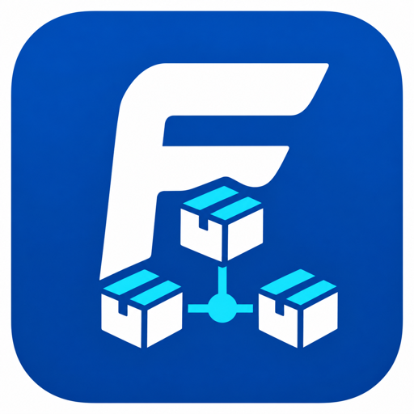
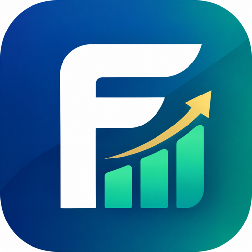

☰

FUJIN
生産

付加価値
i
生産
付加価値
📊
サマリー
📦
品目別
🧩
構成原価
🔍
要因分析
✅
確定前チェック
🌲
構成ツリー
🖨
構成印刷
⚡
手配確定
🏔
山リスト
🏭
製番進捗
📆
製造スケジュール
📖
使い方
←
戻る
🔧 開発者モード ✕
⋯ その他 ▾
📈 FUJIN付加価値アプリ
2026-09-22
📋 受注追跡
2026-05-21 19:47
---
📊 在庫前日比アラート
2026-05-14 22:33
🔬 Phase 2 差分(製番別BOM判定 検証用)
2026-05-14 23:04
📊 差分フロー分析 (4/16→4/21)
—
📋 過去未完了 318件
—
🗺 α路線図（ビジョン）
—
---
[旧版] AI手配判断アシスタント (4/14)
—
[旧版] 手配確定ビューア (4/11)
—
※ 開発・検証用ビュー。班長/全社向けには公開していません。
?
サインアウト
ℹ
最終更新 09-23
データ基準日
2026-09-23 21:41
現在庫基準日
2026-09-24 03:20
統合版生成
2026-09-23 21:42